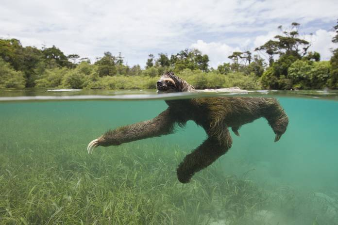
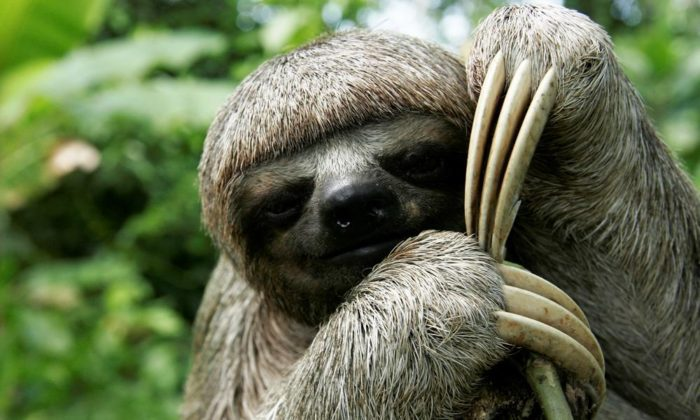
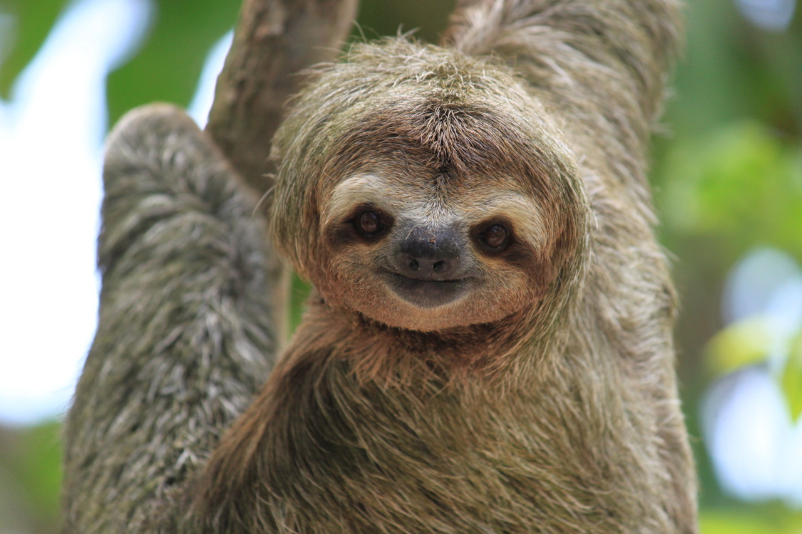
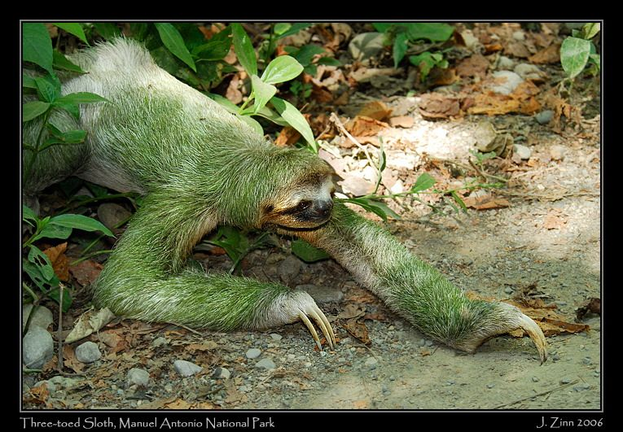
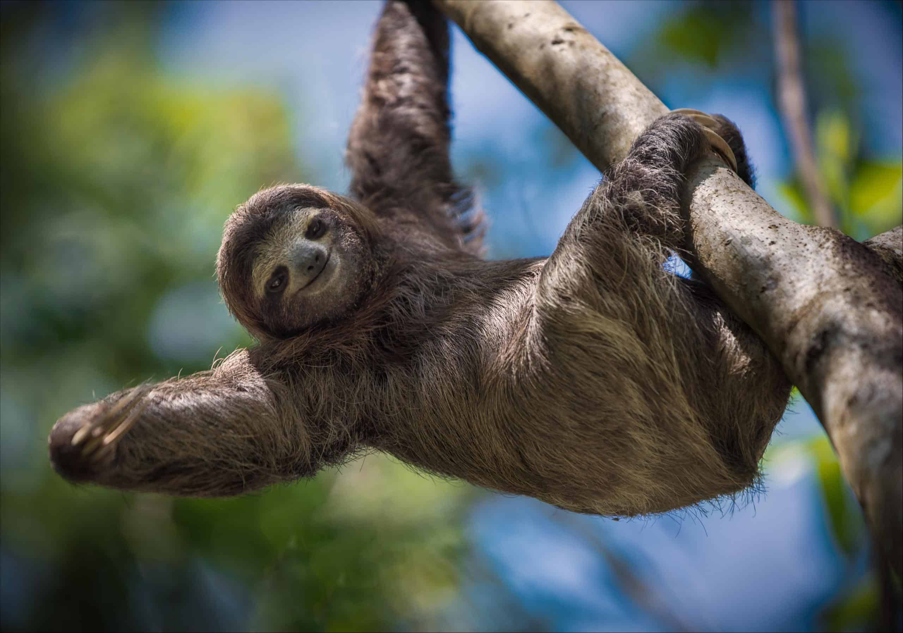
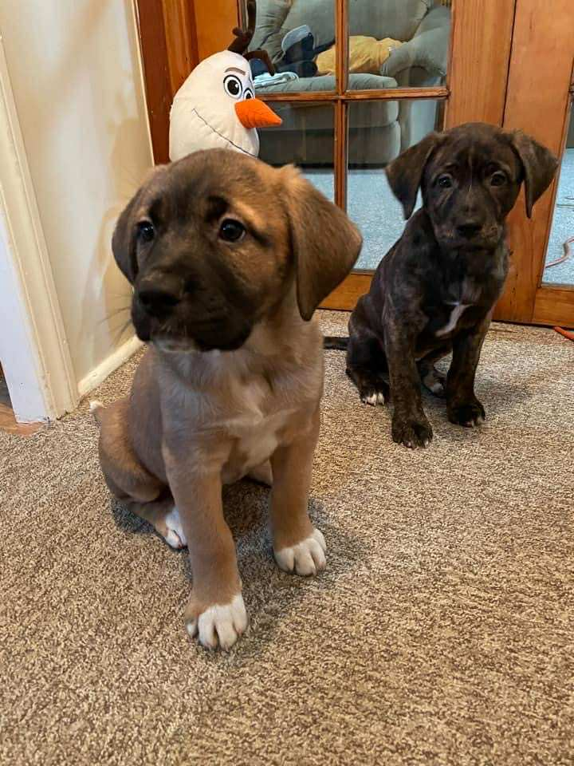

Cats!
Cats, also called domestic cats or house cats, are small domesticated carnivorous mammals.

There is approximately 600 million cats in the world with around 45-75 different breeds!
Cat Breeds!
| Short Hair |
Semi-Long Hair |
Long Hair |
Hairless |
| Bengal |
Maine Coon |
Ragdoll |
Sphynx |
| Russian Blue |
American Curl |
Persian |
Minskin |
| Ocicat |
Nebelung |
Norwegian Forest Cat |
Dwelf |
| Korat |
Turkish Van |
Balinese |
Donskoy |
Cat Fun Facts!
- They lack the ability to taste sweetness!
- They have unique nose prints like we have unique fingerprints!
- Their whiskers are roughly the same width as their bodies!
- A group of them is called a clowder!
- When a cat headbutts you, it's a sign of affection!
Want more facts? Click here!
All about sloths

Fun facts about sloths
Sloths can actually swim really well!
Sloths can move almost 3x faster than on land

Sloths are very lazy creatures!
Sloths spend almost 90% of their lives being lazy, and only move around for essential reasons

You sure that thing is not an owl?
Sloth can turn their heads all the way around like an owl

A walking ecosystem
a sloths fur is home to algae, fungi and even insects

Sloths are stronger than humans!
Despite their laziness and small size they are actually 3x stronger than the average human

Ralph's Section

Wendy W
Wendy is our rescued dog that has been with us since she was 5 weeks old and she is now 4 years old.
History
October of 2021 when we decided to foster animals, specifically dogs, from a rescue place called "Penny's all breed"

Wendy on the left and Freya on the right
Shortly after they are of adopting age, we decided to adopt Wendy
Breed
Wendy appears to be a bulldog breed but according to DNA testing, she is just a tiny part bulldog
DNA results
-
Belgian Malinois : 35%
-
Shiba inu : 25%
-
German Sheppard: 15%
-
American bulldog : 15%
-
Unknown : 10%
DNA website
Diet
List is rated from favorite to least favorite
-
Boiled chicken breast
-
Sauted ground pork and beef
-
Sweet potato
-
Bacon treats
-
Any human food
Fun facts
-
Wendy is the runt of the litter but weighs 80 Pounds
-
She injured her left pinky toe so its pointing the other direction
-
Wendy is a cat trapped in a dogs body, she hates water!!!